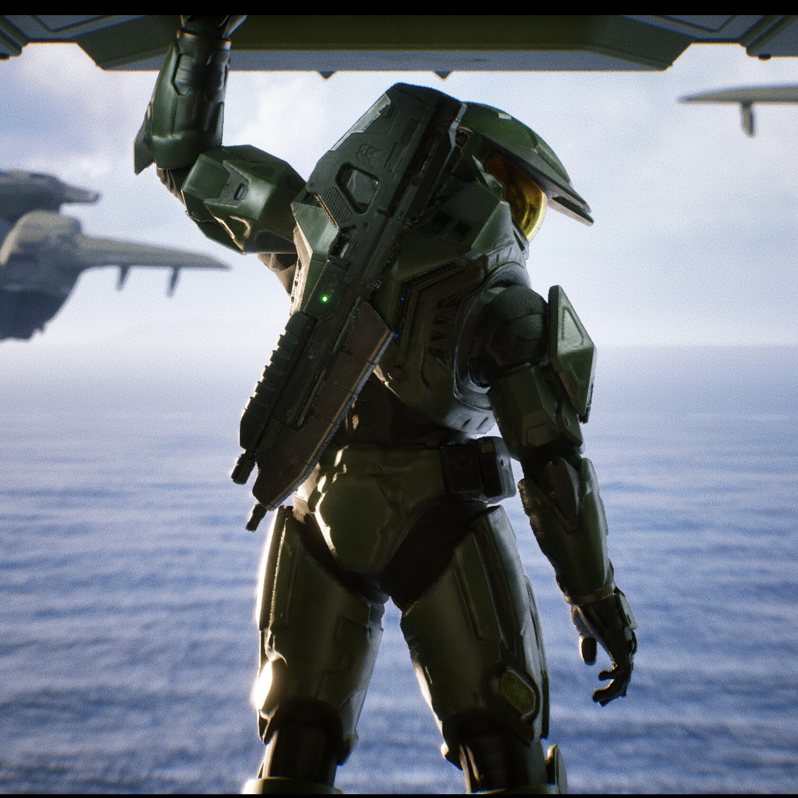

Halo, A Revolutionary Title... And a Crisis of Identity
11/17/2025
STANDING ON TWO LEGS
Halo is a franchise that revolutionized the first-person shooter genre of gaming, and raised the bar for what could be achieved with AI and video game story telling. An epic Sci-Fi military adventure that immortalized itself as an instant classic, with a cinema-worthy narrative. However, for all of Halo's strengths, somewhere along the way it lost something. Why do modern Halo games fall short of the original trilogies glory? And what makes Halo a franchise that was strong enough to stand on it's own two legs?
COMBAT EVOLVED
Halo: Combat Evolved was released in 2001 for the original Xbox game console by Microsoft. Developed by Bungie Studios it was meant to be THE game that motivated consumers to buy an Xbox, and since it was recognized as a critical and commercial success, it did just that. Halo was an experimental title. Groundbreaking AI that followed predictable patterns with dynamic pathfinding and immersive reactions, seamless movement and combat mechanics, map design that compliments the gameplay loop, and an unforgettable ost. Halo wasn't just a "game" it was an experience, and it stood out from it's comtemporaries because it had story to tell. Created during a time where the only other first-person shooter with a story was Half-Life by Valve, Halo was further confirmation that gaming wasn't just a juvenile waste of time, but a legitmate art form.

THREE BETRAYALS
While the original trilogy and prequel are deserving of great praise, since the departure of the original game developers, many fans of this amazing franchise agree that the game has been in a crisis. Three Halo games have been released since the prequel game Halo Reach, and each of these games have severely missed the mark of what Halo is. Halo lived through a time where console gaming was young and still finding it's footing in the modern landscape. Games had smaller budgets and scale, which allowed gaming studios to experiment, innovate, and had very little restrictions placed upon them. Since 2001 the gaming industry has grown exponenentially and has become severely profitable, and while this has allowed for the creation of some truly amazing titles unlike anything we've ever since in the past, it has also fundamentally changed the way games are made. Due to change in leadership, a new development team, and the modern landscape of gaming... Halo has suffered a blow that it still has not recovered from. In an effort to compete with modern first-person shooters, 343 Industries incorporated out-of-place gameplay mechanics that conflicted with Halo's core gameplay loop, drastically changed the artstyle in a way that was unfaithful to the original aesthetic Halo was known for, and meddled with the characters in a way that disrespected the legacy of the Halo games. In other words, Halo lost it's identity.
TRUTH AND RECONCILLIATION
Halo has been stumbling through this current generation of gaming, trying to find it's footing in a corporatized climate. Most have lost hope that it can ever be great again. It may never be... but Halo is more relevant now than ever before. Halo stands out as a reminder to the amazement and sense of wonder that gaming used to make us feel. The simplicity of turning on, and settling in to be taken on a journey through another world. A feeling that very few modern games can illicit. We may never have another great Halo game, but we can't forget what Halo represented. If modern day examples of consumers fighting back against corporate greed, like the Helldivers 2 mass review bomb that caused Sony to roll back on it's absurd PSN requirements teaches us anything, it's this... we're in a fight for the soul of gaming. We decide the future of this business with our money, time and voices. Like humanity in Halo... we are losing. But there is still time. To quote the Master Chief himself... it's time for us to start "finishing this fight".